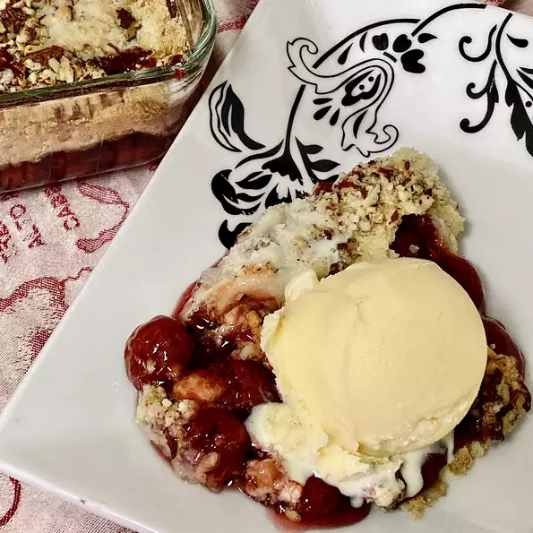

Cherry Dump Cake

Description
Amazingly easy and amazingly good... too good! This is my mother-in-law's recipe that was just recently shared. It would
be a shame not to share it. Best served warm and with vanilla ice cream (of course).
Ingredients
- 2 (21 ounce) cans cherry pie filling
- 1 (15.25 ounce) package white cake mix
- 1/4 cup butter, melted
- 1/2 cup coarsely chopped pecans
Directions
- Preheat the oven to 350 degrees F (175 degrees C).
- Spread cherry pie filling over the bottom of a 9x13-inch baking pan. Stir cake mix and butter together into a gooey,
clumpy mixture. Break into pieces between your fingers and crumble evenly on top of the cherry filling. Sprinkle pecans
on top.
- Spread cherry pie filling over the bottom of a 9x13-inch baking pan. Stir cake mix and butter together into a gooey,
clumpy mixture. Break into pieces between your fingers and crumble evenly on top of the cherry filling. Sprinkle pecans
on top.
Home
To top